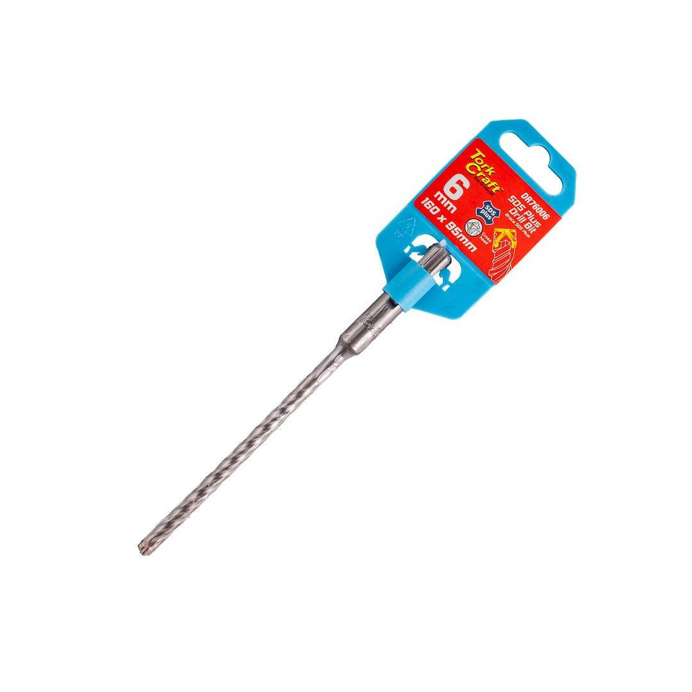

DR76006
38.64

Diameter: Ø6mm
Total Length: 160mm
Usable Length: 95mm
An SDS-plus cross-head rebar drill bit is a specialized tool designed for drilling through reinforced concrete. Its distinctive cross-shaped head features four carbide-tipped cutting edges that efficiently cut through rebar, preventing the bit from jamming or breaking. The SDS-plus shank ensures a secure fit in compatible rotary hammers, providing optimal power transfer for demanding drilling tasks. This type of drill bit is essential for professionals in construction, renovation, and demolition, where drilling through reinforced concrete is a common requirement.
Application: